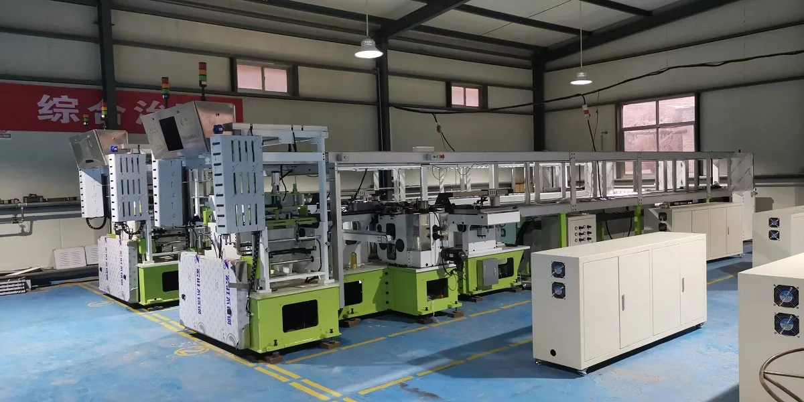

QL-ALHCS-V2 Automatic Capsule Line
Single-row pin line · 30–32 mould bars/min with gelatin
- Capsule sizes 00#–4#
- Automatic oiling through joining
- Servo and process monitoring
Single-row pin line · 30–32 mould bars/min with gelatin

Double-head line · 28–30 mould bars/min with gelatin

Flexible operation · 30–32 mould bars/min with gelatin

Precision components for capsule forming equipment

Automation and operating-status monitoring for production lines